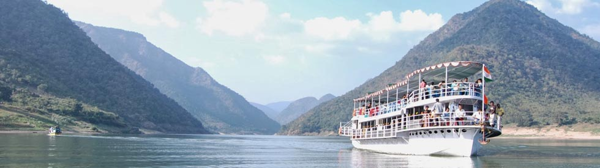
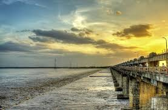
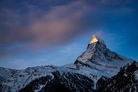
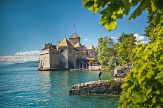
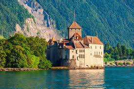

Name: Bhuvana Kruthi Dasari
Reg No: 24B01A4215
FSD Assignment-6: Tour Guide
Location: Rajahmundry, East Godavari District, Andhra Pradesh, India
Brief Description / History: Rajahmundry, also called "River City", is located on the banks of the Godavari River. It is known for its rich culture, history, and temples. The city played an important role in the Indian independence movement and has a thriving literary heritage.
Rajahmundry is known for its cultural festivals and cuisine. Famous foods include:
Major festivals celebrated here include Godavari Pushkaralu (once every 12 years), Sankranti, and Diwali.



| Aspect | Details |
|---|---|
| State | Andhra Pradesh |
| Language | Telugu |
| Famous Landmark | Godavari Bridge |
| Population | ~3 lakh |
Location: Switzerland, Central Europe
Brief Description / History: Switzerland is famous for its stunning landscapes, mountains, lakes, and efficient cities. It is a major tourist destination known for skiing, hiking, and luxury travel. The country has a rich history of neutrality and banking.
Switzerland is famous for its culture, chocolates, and festivals:
Major festivals include Montreux Jazz Festival, Geneva International Film Festival, and Sechseläuten in Zurich.



| Aspect | Details |
|---|---|
| Country | Switzerland |
| Languages | German, French, Italian, Romansh |
| Famous Landmark | Matterhorn Mountain |
| Population | ~8.5 million |